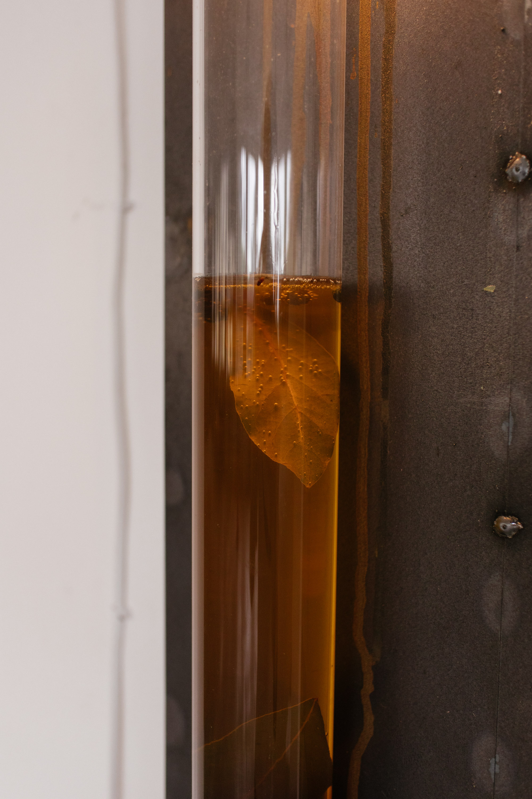
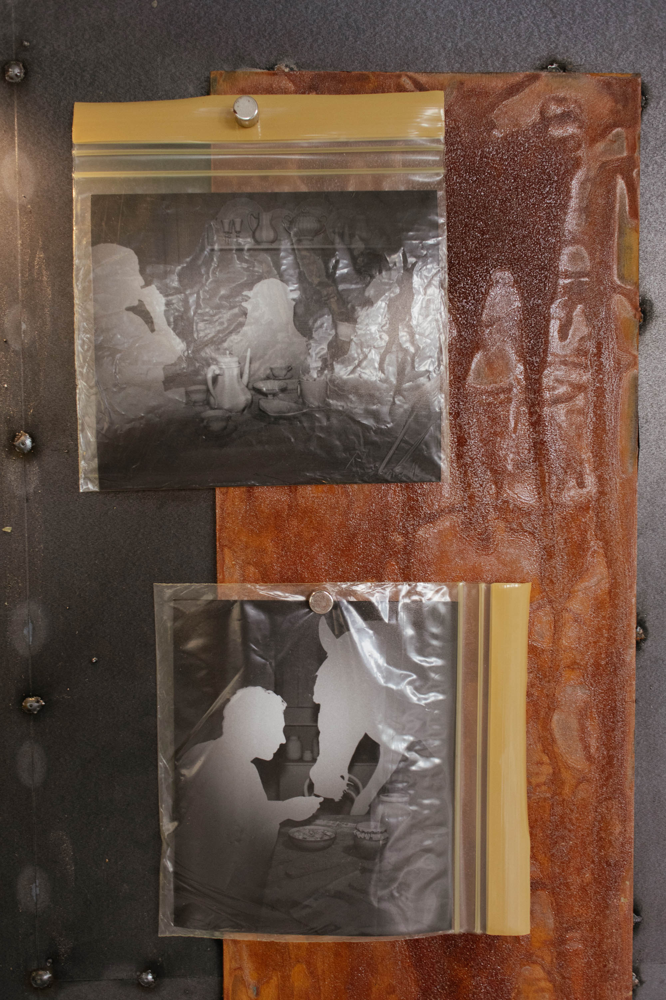

Anonymous Hospitality Episode 1, Brno 2025
Renders, photo printing, welded metal object 40 × 80 cm
The current picture of history is a mixture of memory and fiction, where a new generation with no direct memories of the past political system must seek understanding in the “crazy archive”. In an age of fake news and conspiracies, it is difficult for consciousness to critically perceive alternatives. In this context, there is a tendency to reject routine and ritual as elements legitimizing the oppressive totality of historical thinking. The project will focus on the ritual of starting from scratch as a way of overcoming the totality of the crazy archive. The archive is both a starting point and a site of action for dialogue with the Other (someone who is not me ) in conditions of anonymous hospitality and intimate distance. The aim is to reduce the content of the archive to the ritual depicted in it without context, which can be understood as a new point of reference(the document becomes a monument). The thematic core of the project is the ritual of food preservation and the theme of feasting (or celebration), focusing on the manipulation of archival material (including KoViZP: Soviet instructions on proper nutrition and the organization of everyday life), revealing the ideological superstructure and seeking a new starting point. In order to emphasize the foreign element of fictional excess, the situation of anonymous feasting and eating from the simplest products, but organized and served seemingly according to the rules of baroque luxury, is examined. The documentary form plays a decisive role here. Using the technique of architectural visualization (a render in grey material used to find errors in models and light), archival photographs of the banquet will be reconstructed, freed from visual luxury by simplifying and anonymizing the participants. Another layer of preservation will take place in the phase of converting the digital images to film. The visual language of the installation will focus on a museum aesthetic with elements of the cabinet of curiosities as a way of reinforcing alienation. The bureaucratic aspect of the problem of emerging from totality/ starting anew is also an important component, which will be addressed through the example of the story of the acquisition of a dog passport by the protagonist of the project.
white cube stduio context





An intervention "It's not thad bad" into the exhibition CECOSLOVACCHIA at GAMPA, Pardubice, Czech Republic 7 - 11.7.2025